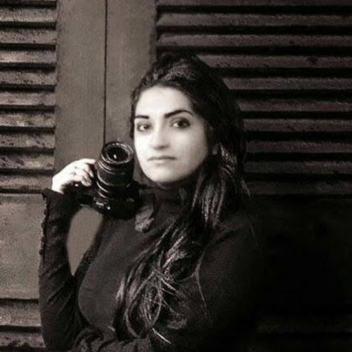

<?
	$title = 'Interviews';
	TemplateMaker::Header('+'.$title);
?>

				<!-- Main -->
					<div id="main">
						<div class="inner">
						<? TemplateMaker::HeroImage(['title'=>$title,'img'=>'hadesstar-cerberussentinel-by-gabrielbjorkstiernstrom.jpg','url'=>'https://gabrielbjorkstiernstrom.artstation.com','by'=>'Gabriel Bjorkstiernstrom','txt'=>'Simple export of all known games. More work is planned for this page, but for now it may be easier to download the .csv to use as you wish.']) ?>

						<p>Welcome to our interviews section, where we will periodically interview some of the top players, commanders and First Officers in the Hades Star galaxy to provide some deeper insight into their HS career, their thoughts on White Stars, and maybe some #offtopic too.</p>
						<p><i>Click on the avatars or names below to read more.</i></p>
							
							<span class="image left"><a href="interviews/ahlims.html"></a></span>
							<h2><a href="interviews/ahlims.html">Ahlims</a></h2>
							<blockquote style="display: grid">"There is no shame in imitation. Whenever you lose to a stronger opponent, understand why you lost. Evaluate and adopt the relevant parts of their tactics and tweak it to your own."</blockquote>
							<br>
							<span class="image left"><a href="interviews/wayne-gro.html"></a></span>
							<h2><a href="interviews/wayne-gro.html">Wayne-Gro</a></h2>
							<blockquote style="display: grid">"I think that large guilds offer a lot of benefits that smaller groups have a hard time matching ... they can provide services at whatever level the player wants."</blockquote>
							<br>
							<span class="image left"><a href="interviews/bonikowsky.html"></a></span>
							<h2><a href="interviews/bonikowsky.html">Bonikowsky</a></h2>
							<blockquote style="display: grid">"...the golden days for me were long ago when we'd put together these awe-inspiring multiple-stage leap attacks... Super fun to plan and more fun to pull off."</blockquote>
							<br>
							<span class="image left"><a href="interviews/samkay.html"></a></span>
							<h2><a href="interviews/samkay.html">SamKay</a></h2>
							<blockquote style="display: grid">"A successful corp doesn't just come from winning matches and events. It comes from multiple personalities, working in sync towards bettering long-term corp values and goals."</blockquote>
						</div>
					</div>

<? TemplateMaker::Footer() ?>
